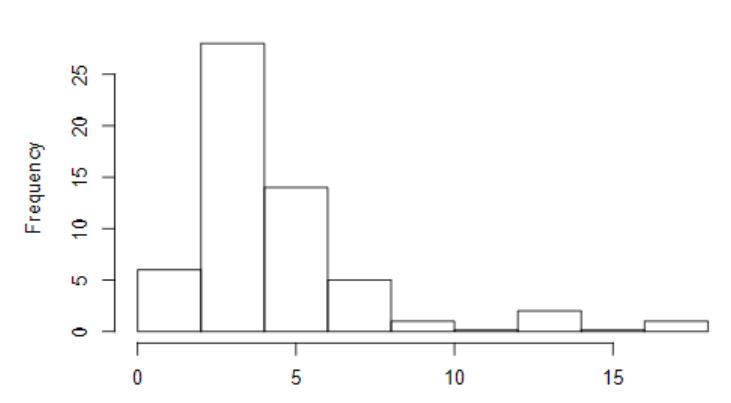

Chapter 2
Investigations 2.1 - 2.6Chapter 2
Investigations 2.1 - 2.6 Oct 26, 2020
In Chapter 2 we discussed more ways of analyzing data and ways of evaluating the accuracy of measurements, but also of ways to represent data using different graphs, like boxplots and histograms.
Investigations 2.1 and 2.2: Visualizing and Describing Quantitative Data
 Key Terms
Data Skew: The direction the data has more points in is the direction it is skewed in. For instance, when the mean is followed by a shallow curved on the right side, meaning more data comes after the mean, then it is "Skewed to the Right."
Resistant: A numerical statistic that is not strongly influenced by a change in one or two extreme data values.
Interquartile Range: The IQR is the difference between the upper quartile - lower quartile. This essentially measures the width of the middle 50% of the observations.
Boxplot: A graph based on the five-number summary, also known as a box-and-whisker plot.
Outlier: An outlier is technically defined as any data points that land outside of the upper quartile + 1.5*IQR, and the lower quartile - 1.5*IQR.
In these investigations we looked at ways to visualize quantitative data, mainly histograms, boxplots, and qqplots. A study in 1996 explored whether driver characteristics are related to an aggressive response, and recorded how long it took drivers to react to a stalled car at a green light. The majority of drivers spent only 2-3 seconds waiting, and we looked at the quartile ranges for the data.
Investigation 2.4: The Ethan Allen
In this investigation we looked at a tour boat and whether its capsizement could have been predicted. Using generated samples, we looked at the probability that any given sample group would exceed the weight limit of the boat, given the average person weighed 159.6 lbs. The CLT came into play again, to assess the size of our sample group.
Investigations 2.5 and 2.6:
Key Terms
Standard Error: SE is an estimate of the standard deviation of the sample variability of sample means.
One-Sample t-Test for mu: A test for the null hypothesis when the population standard deviation is unkown. In order to use this test, the population must follow a normal distribution, and only when the distribution symmetric or the sample size is large.
Prediction Interval: The PI is an interval constructed from the sample mean, adjusted to take into account the additional variability of individual values from the population mean.
Investigations 2.5 and 2.6 studied the validity of the antiquated measurement of 98.6 F as a standard body temperature. We used the findings to determine just how accurate the old measurement was, by utilizing the standard error and t-distribution. We were able to reject the null hypothesis and thus the temperature of a healthy adult is likely different than 98.6. We used the prediction interval to estimate with 95% confidence that the body temperature of a healthy adults is anywhere from 96.79 to 99.71.